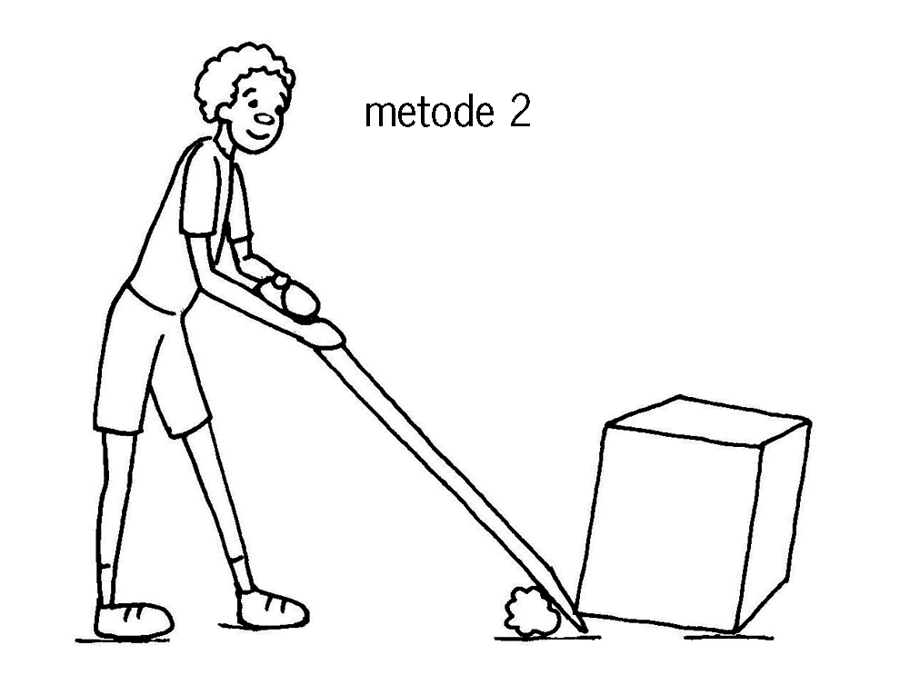

In hierdie hoofstuk gaan jy meer leer oor maniere waarop mense dit regkry om dinge te doen wat hulle nie met hul liggame kan doen nie.
Figuur 1
Spesiale projekte
As jy ’n bietjie tyd tuis of by die skool het, probeer gerus een of meer van die volgende aktiwiteite:
Bou ’n werkende model van die waterhefboom op die volgende bladsy. As jy dit binne die volgende twee dae kan maak, kan jy dit in les 4.3 gebruik.
Kyk versigtig na die kleurdiagramme op die volgende bladsy. Probeer om te sien watter eienskappe van hefbome in die diagramme gesien kan word. Skryf opskrifte vir die tekeninge om te verduidelik wat hulle uitbeeld.
Figuur 2
Figuur 3
Die emmers word gebruik om water uit die put te haal.
Lig voorwerpe met ’n hefboom
In die prente hieronder probeer Tom om die een kant van ’n betonblok met ’n hefboom op te lig. Die prente wys drie verskillende maniere waarop hy kan probeer om dit te doen.
Die punt waar die stok deur die kleiner klip ondersteun word, word die steunpunt of spilpunt genoem.
Watter manier dink jy sal die beste werk, en waarom dink jy so? Die hefboom rus op ’n kleinerige klip en sal op die klip beweeg. As Tom een punt van die hefboom afwaarts stoot, druk die ander punt die betonblok opwaarts.
Figuu 4a
Figuur 4b

Figuur 4c
Beskryf wat verskillend is in verband met die hefboom in elk van die drie gevalle hierbo.
Sluit by twee klasmaats aan en werk met ’n hefboom
Julle het drie voorwerpe vir hierdie aktiwiteit nodig:
’n stok van omtrent 30 cm lank, wat as hefboom gebruik kan word,
’n baksteen of klip omtrent so groot soos ’n baksteen, en
iets waarop die hefboom ondersteun kan word.
Doen nou die volgende:
Gebruik die stok as ’n hefboom om die een kant van die baksteen op te lig.
Figuur 5
In watter geval help die hefboom jou die meeste? Is dit wanneer die steunpunt naby die baksteen is, of is dit wanneer die steunpunt ver van die baksteen is?